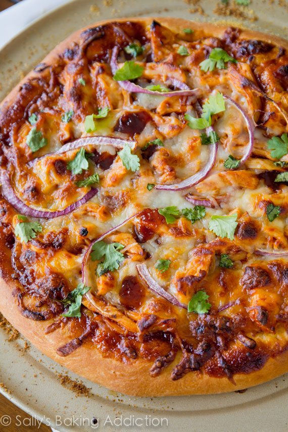

Homemade BBQ Chicken Pizza

Description
This is a recipe for classic BBQ chicken pizza with tangy BBQ sauce, chicken, and red onion. Gouda cheese gives the homemade pizza the most delicious smoky flavor and cilantro adds a touch of freshness. My pizza dough recipe makes enough for two 12-inch pizzas. Toppings listed are enough for one 12-inch pizza. Freeze the rest of the pizza dough for another time.
Ingredients
- 1/2 recipe homemade pizza crust
- 1–2 teaspoons olive oil
- 1/3 cup + 2 Tablespoons your favorite BBQ sauce
- 1 cup chopped or shredded cooked chicken (about one 8-ounce breast)
- 2/3 cup shredded mozzarella cheese
- 2/3 cup shredded smoked gouda cheese
- 1/2 small red onion, thinly sliced
- optional: chopped fresh cilantro for topping
Steps
- Prepare pizza dough through step 5, including preheating the oven to 475°F (246°C). Cover the shaped dough lightly with plastic wrap and allow it to rest as the oven preheats.
- To prevent the pizza toppings from making your pizza crust soggy, brush the shaped dough lightly with olive oil. Using your fingers, push dents into the surface of the dough to prevent bubbling. Top the dough evenly with 1/3 cup BBQ sauce. Toss the cooked chicken with the remaining BBQ sauce, then scatter all around the pizza. Add the cheeses and red onion.
- Bake pizza for 12-15 minutes. Remove from the oven and top with fresh cilantro, if desired. Slice hot pizza and serve immediately.
- Cover leftover pizza tightly and store in the refrigerator. Reheat as you prefer. Baked pizza slices can be frozen up to 3 months. See pizza crust recipe for instructions on freezing the pizza dough.
Back to Home